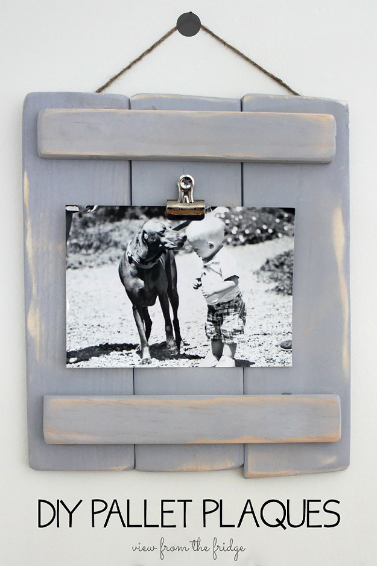
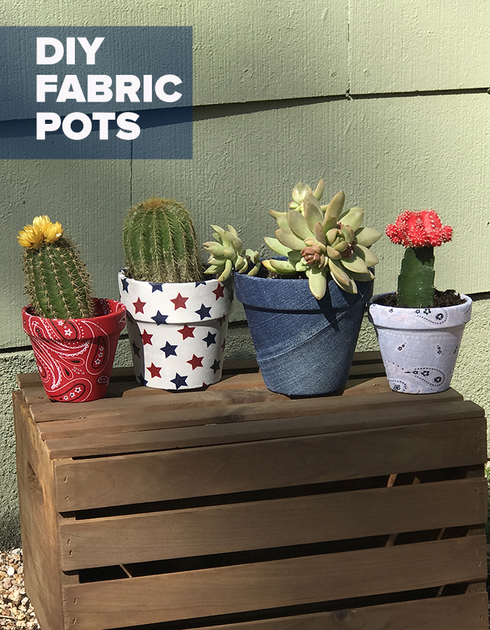
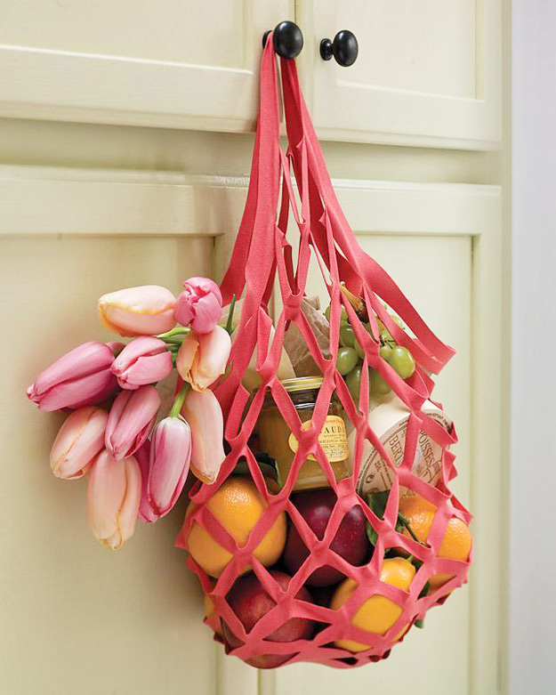
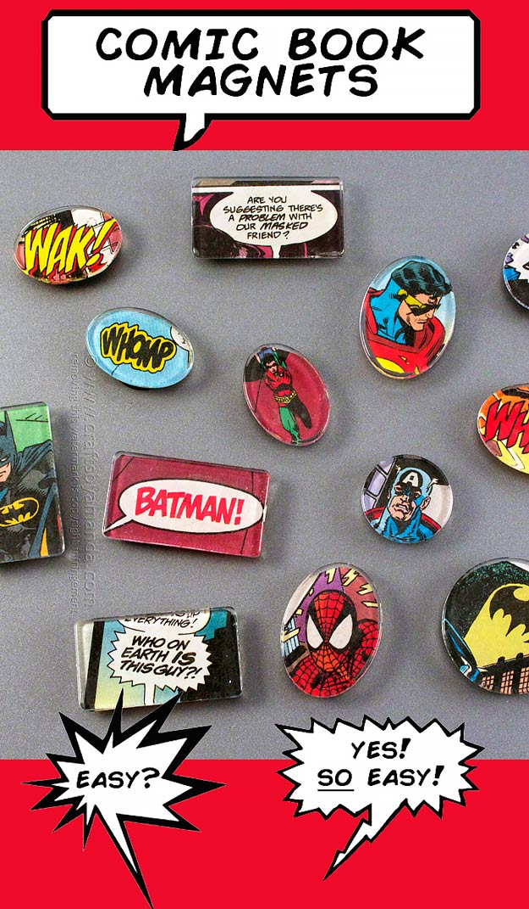

| Home | Shop | Contact us |
|---|
A craft or trade is a pastime or a profession that requires particular skills and knowledge of skilled work. In a historical sense, particularly the Middle Ages and earlier, the term is usually applied to people occupied in small-scale production of goods, or their maintenance, for example by tinkers. The traditional term craftsman is nowadays often replaced by artisan and by craftsperson (craftspeople).
Historically, the more specialized crafts with high value products tended to concentrate in urban centers and formed guilds. The skill required by their professions and the need to be permanently involved in the exchange of goods often demanded a generally higher level of education, and craftsmen were usually in a more privileged position than the peasantry in societal hierarchy. The households of craftsmen were not as self-sufficient as those of people engaged in agricultural work and therefore had to rely on the exchange of goods. Some crafts, especially in areas such as pottery, woodworking, and the various stages of textile production, could be practiced on a part-time basis by those also working in agriculture, and often formed part of village life.
Once an apprentice of a craft had finished his apprenticeship, he would become a journeyman searching for a place to set up his own shop and make a living. After he set up his own shop, he could then call himself a master of his craft.
| Item | Description | Price |
|---|---|---|
|  |
DIY Pallet PlaquesThis cute little picture frame is so simple, so elegant, but so rustic. Made from upcycled wood pallets, this frame has the look that is oh so popular right now. I can sell as many of these as I can make, too! Learn how to make these homemade frames in this easy to follow tutorial. Customize the frames with the paint colors of your choice, too! You can even add embellishment if you like to the upper and lower bars. So creative, a great DIY project to make to sell, and you will want to check out and try yourself. If you are looking for something easy and cheap to make and sell on Etsy or another online marketplace, this is one of my top picks. You can find reclaimed wood for free, and this distressed DIY farmhouse decor is about as popular as it gets, many of the Etsy sellers I saw who offered something similar were most often sold out. Cute for a gift idea, I highly recommend making these cute handmade picture frames to have on hand for Christmas holiday sales. |
Rs. 250.00 |
|  |
DIY Fabric Covered PotsLearn how to make these fun and easy decoupage pots using only scrap fabric. Check out our latest video tutorial on Youtube to learn how. Perfect cheap idea to make and sell, but these cute and crafty pots also make super homemade gifts. |
Rs.300.00 |
Yarn Ball Bookmarks |
Rs.300.00 | |
|  |
No Sew Market Tote BagAfter my city passed an ordinance that bans plastic bags at grocery stores, I got crafty with my own shopping bags. After making several different kinds, I noticed people kept complimenting this one in particular, and for good reason. Look how cute it is just hanging on the door. Anything that doubles as a cute home decor accessory while still being functional makes me super happy. If you want something easy to make and sell, this craft is perfect. Cheap and doable even for the beginning DIYer, these colorful bags photograph well, are lightweight and easy to ship. You can package them in an envelope and don’t even need to deal with shipping boxes and odd weights, either. |
Rs.100.00 |
|  | Comic Book Magnets |
Rs.50.00 |
Please follow our social media accounts for promotions and discounts !!!
|
|
|
|---|